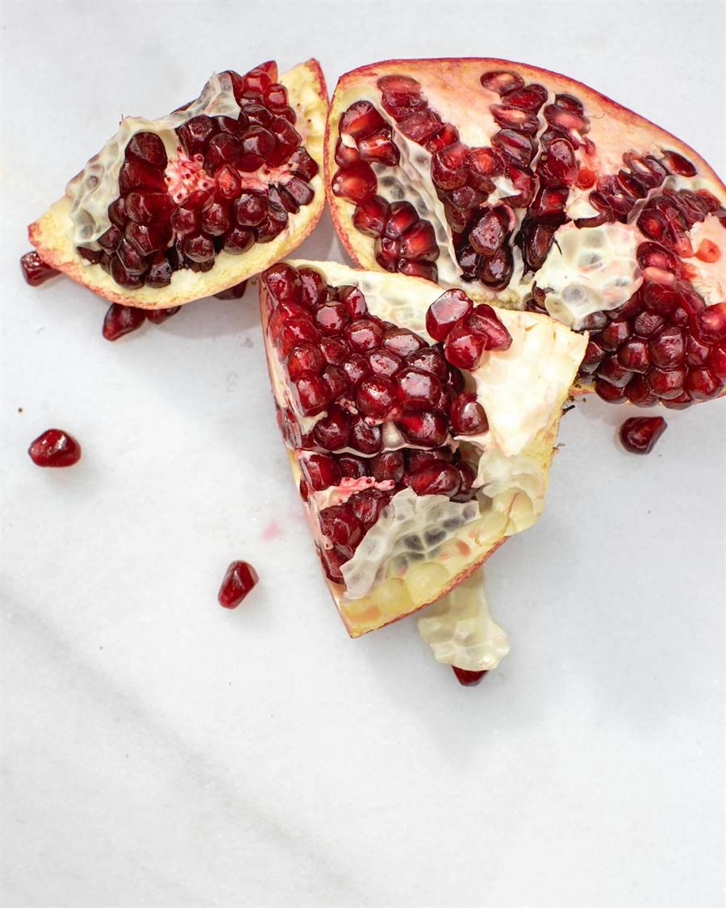

Pomegranate
Quick answer
Pomegranate is rich in punicalagins and ellagitannins, large polyphenol molecules metabolized by gut bacteria into urolithins - compounds actively researched for anti-inflammatory and mitochondrial health properties. The fruit also provides anthocyanins, vitamin C, and potassium.
What it is
Pomegranate (Punica granatum) is a fruit native to Iran and northern India, now cultivated across the Mediterranean, Middle East, and California. The edible portion consists of hundreds of ruby-red seed sacs called arils, surrounded by a thick inedible rind.
Pomegranate has been a symbol of health and fertility in many ancient cultures. The arils are eaten fresh, pressed into juice, sprinkled over salads and grain bowls, or used in Middle Eastern and Indian cooking. Pomegranate juice and pomegranate molasses are common commercial forms.
Why pomegranate may support an anti-inflammatory diet
Punicalagins are the most abundant polyphenols in pomegranate and are responsible for much of its measured antioxidant activity. When consumed, punicalagins and ellagitannins are broken down by gut microbiota into urolithins, particularly urolithin A, which has shown anti-inflammatory effects in cell and animal studies and is now being tested in human clinical trials.
The anthocyanins in pomegranate arils contribute additional antioxidant capacity. Pomegranate juice has been studied in several clinical trials for its effects on oxidative stress markers, blood pressure, and arterial function, with some positive findings particularly in populations with elevated cardiovascular risk.
Key nutrients and compounds
A 100g serving of pomegranate arils provides approximately 10.2mg vitamin C (11% DV), 236mg potassium (5% DV), 4g fiber, and 1.7g protein. The total polyphenol content of pomegranate juice is among the highest of common fruit juices, with punicalagins contributing the majority.
Potential health benefits
- Contains punicalagins that produce urolithins via gut bacteria - a unique metabolic pathway
- Provides anthocyanins with antioxidant properties
- Pomegranate juice has been studied for effects on blood pressure and arterial function
- High polyphenol density relative to calorie content
- Versatile in both sweet and savory dishes
How to eat pomegranate
- Scatter fresh arils over yogurt, oatmeal, or grain bowls for color and crunch
- Drink 120-240ml of 100% pomegranate juice daily as a polyphenol-rich beverage
- Add arils to salads with spinach, walnuts, and feta cheese
- Use pomegranate molasses as a tangy glaze for roasted vegetables
- Blend arils into smoothies with berries and banana
- Sprinkle over hummus or avocado toast for a Middle Eastern-inspired finish
Shopping and storage
Choose pomegranates that feel heavy for their size, indicating juicy arils. Pre-packaged arils save preparation time. Store whole pomegranates at room temperature for up to 2 weeks or refrigerate for up to 2 months. Arils freeze well for long-term storage.
FAQ
Is pomegranate juice as good as fresh arils?
Juice provides concentrated polyphenols but lacks the fiber of whole arils. Both forms have benefits. Choose 100% juice without added sugar for maximum polyphenol content.
How much pomegranate should I consume?
Most studies use 240ml of juice or about 1 cup of arils daily. Even smaller amounts several times per week add meaningful polyphenol intake to your diet.
Can pomegranate interact with medications?
Pomegranate juice may interact with certain medications, particularly statins and blood pressure drugs, similar to grapefruit. Consult your doctor if you take prescription medications regularly.
Are pomegranate supplements effective?
Whole fruit and juice provide the full spectrum of compounds in their natural matrix. Supplements vary widely in quality and composition. Food-based intake is generally preferred.
Evidence note
Pomegranate has been studied in numerous clinical trials, particularly for cardiovascular markers. Research on urolithin A is emerging, with early human trials showing potential effects on mitochondrial function and muscle health. The gut microbiome's role in converting pomegranate polyphenols adds complexity to individual responses.
This page describes pomegranate as a supportive food within a broader anti-inflammatory eating pattern, not as a standalone medical treatment.